Tras perder casi el 60 % desde máximos por un ciberataque, tres recortes de guía y la compra de Penumbra por US$14.500 M, ¿descuenta Boston Scientific una crisis pasajera o el fin de su ventaja en cardiología?
Boston Scientific escaló de US$9.048 M en FY2017 a US$21.070 M LTM gracias a FARAPULSE y Watchman, pero en 2026 sufrió un ciberataque global, tres recortes de guía, retiros Clase I de la FDA y comprometió US$14.500 M por Penumbra. A US$41,98 (−58,8 % desde máximos), nuestro DCF Base independiente de US$37,15 (MOS 35 %: US$24,14) indica que el mercado aún descuenta una rápida recuperación de crecimiento o margen.
Con sede en Marlborough (Massachusetts) y ~59.000 empleados, diseña y comercializa dispositivos médicos desechables de intervención mínimamente invasiva en dos segmentos reportables: Cardiovascular (66,7 % de las ventas 9M26; Cardiología Intervencionista, Electrofisiología, CRM, Watchman y Oncología) y MedSurg (33,3 %; Endoscopía, Urología y Neuromodulación).
En los últimos doce meses al 30-sep-2026 generó US$21.070 M en ingresos, margen bruto de 69,1 %, EBIT GAAP de US$3.932 M (18,7 %) y flujo operativo de US$4.234 M, con deuda financiera de US$11.953 M y efectivo de US$609 M (más US$2.292 M en inversiones no operativas). Valoración independiente sin incluir Penumbra proforma.
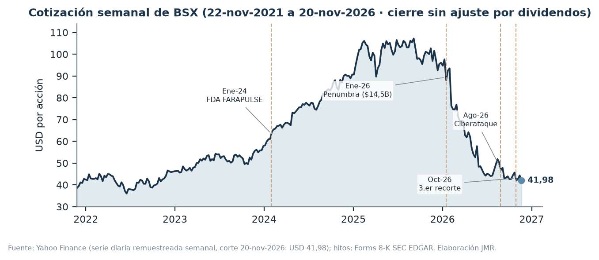
Este informe es un estudio educativo y de análisis fundamental elaborado bajo el Modelo JMR V2.0 (contrato v1.5.6) para revisión personal de su propietario. No constituye asesoramiento financiero, oferta ni recomendación individualizada de compra o venta de valores. Toda inversión en renta variable conlleva riesgo de pérdida sustancial o total de capital.
Las cifras históricas proceden de documentos oficiales presentados ante la SEC (Forms 10-K FY2017–FY2025, 10-Q 3T26, Forms 8-K y Proxy DEF 14A). Las proyecciones, escenarios y pruebas de estrés ilustrativas reflejan supuestos explícitos del analista y no garantías de desempeño futuro.
Revisión BSX-V2-LTM20260930-R2, corte contable LTM al 30-sep-2026 y precio de cierre al 20-nov-2026 (US$41,98). Estado técnico: EN REVISIÓN (valoración preliminar visible en el visor de pendientes, sin auditoría independiente ni aprobación personal del propietario). La valoración modela Boston Scientific de forma independiente (standalone) y no consolida proforma la adquisición pendiente de Penumbra (cierre previsto para inicios de 2027), cuyo análisis de riesgo y financiamiento se documenta explícitamente.
El cálculo económico se ejecuta en el libro oficial Damodaran Simple Ginsu (BSX-V2-LTM20260930-R2_VALORACION.xlsx) con WACC calculado íntegramente por fórmulas (8,644 % inicial → 8,537 % terminal), capitalización de I+D a 5 años (base homogénea ajustada por I+D a 5 años y tasa efectiva inicial normalizada a 17,5 %), tres escenarios (Conservador US$22,65 · Base US$37,15 · Optimista US$55,82), margen de seguridad del 35 % exclusivamente sobre el Base (US$24,14) y paridad libro↔motor JS de 0,000 %. Los cuadros históricos se generan desde el módulo A-1.2 con importes absolutos en millones de USD y ratios en su unidad natural, separando FY y LTM. La maquetación reproduce de forma idéntica los ejemplares inmutables NVIDIA R6 (38 págs.) y MercadoLibre R8 (31 págs.).
Entre 2021 y 2025, Boston Scientific fue el caso de éxito indiscutible de los dispositivos médicos de gran capitalización. El lanzamiento en EE. UU. del sistema de ablación por campo pulsado FARAPULSE (enero de 2024), el auge de Watchman FLX Pro en cierre de orejuela auricular izquierda (LAAO) y una ejecución disciplinada en adquisiciones (Axonics, Silk Road Medical, Bolt Medical) llevaron el crecimiento anual reportado a +17,6 % en FY2024 y +19,9 % en FY2025. A finales de 2025, la acción cerró en USD 95,35 y superó los USD 101 en el arranque de 2026, cotizando a más de 35× EV/EBITDA y descontando años de expansión de doble dígito sin fricciones.
Esa narrativa se fracturó pieza por pieza a lo largo de 2026. Primero, el 14/15 de enero de 2026, BSX anunció el acuerdo definitivo para adquirir Penumbra, Inc. por USD 374 por acción (~USD 14.500 M; 73,26 % en efectivo y 26,74 % en acciones BSX), su mayor operación en dos décadas, pagando ~10× ingresos esperados de 2025 (~USD 1.400 M) para reingresar en trombectomía mecánica y neurovascular. Dos meses después (16-mar-2026), la FTC emitió un Second Request que desplazó el cierre esperado hacia principios de 2027.
Segundo, en abril y julio de 2026 la compañía recortó sus expectativas anuales ante una moderación inesperada en Watchman y la entrada agresiva de rivales en ablación por campo pulsado (PFA). En paralelo, en mayo de 2026 la FDA clasificó como Clase I la ampliación del retiro correctivo de marcapasos Accolade (por impedancia de batería y entrada prematura en modo de seguridad), y en mayo-junio BSX desembolsó USD 2.000 M en una recompra acelerada de acciones (ASR con JPMorgan, ~40 M de acciones a un precio medio cercano a USD 50).
Tercero, el 25 de agosto de 2026 (Form 8-K Item 1.05 del 8-sep-2026) BSX sufrió un incidente cibernético con acceso no autorizado que interrumpió sistemas operativos, manufactura, procesamiento de pedidos y despachos globales. Un día después se sumó otro retiro Clase I de lotes del sistema transcarotídeo Enroute. El resultado quedó reflejado en el 10-Q del 3T26 (28-oct y 2-nov-2026): ventas de USD 5.138 M (+1,5 % interanual), utilidad neta GAAP a la baja 22,9 % (USD 580 M), tercer recorte de guía anual (crecimiento orgánico 2026 reducido a ~3,75 % y BPA ajustado a USD 3,16–3,18), previsión de caída orgánica de −1 % a −3 % para el 4T26 y advertencia de que será difícil crecer en ingresos y BPA ajustado en 2027 sin Penumbra.
| Fecha (2026) | Evento verificado (fuente) | Impacto económico / estratégico |
|---|---|---|
| 14–15 ene | Acuerdo definitivo por Penumbra (Form 8-K, acc. 0000947871-26-000037) | USD 14.500 M (73,3 % caja / 26,7 % acciones); ~10× ventas; tarifa ruptura USD 900 M. |
| 16 mar | Second Request de la FTC sobre Penumbra (10-Q 3T26) | Retrasa el cierre hasta inicios de 2027 y eleva la incertidumbre regulatoria. |
| Abr y jul | Primer y segundo recorte de guía 2026 (8-K 1T26/2T26; MedTech Dive) | Frenazo de Watchman y mayor presión competitiva de Medtronic/J&J/Abbott en PFA. |
| 7 may | Retiro Clase I FDA en marcapasos Accolade (FDA / MassDevice) | Actualización de software Brady SMR6; presión sobre CRM y costos de calidad. |
| 18 may–12 jun | ASR de USD 2.000 M con JPMorgan (10-Q 3T26, Nota de Patrimonio) | Retira ~40 M de acciones (~USD 50/acc. promedio), reduciendo caja antes de Penumbra. |
| 25 ago–8 sep | Incidente cibernético global (8-K Item 1.05, acc. 0000885725-26-000059) | Interrupción de plantas y envíos; resta ~300 pb de crecimiento y ~USD 0,07/acc. en 3T26. |
| 23 sep–7 oct | Cambios directivos (8-K Item 5.02): retiro A. Butcher; J. Fitzgerald COO | Consolidación operativa de Cardiovascular y MedSurg desde el 1-ene-2027. |
| 28 oct–2 nov | Resultados 3T26 y tercer recorte de guía (10-Q 3T26, acc. 0000885725-26-000070) | Ventas +1,5 %; Watchman −5,9 %; EP −5,7 %; guía 4T26 orgánica −1 % a −3 %. |
| 19–20 nov | Emisión de bonos USD 3.000 M + €4.250 M (8-K acc. 0000885725-26-000076) | ~USD 7.600 M en deuda senior (cupones USD 5,375–5,875 %) para fondear Penumbra. |
A diferencia de las compañías farmacéuticas expuestas a precipicios de patentes abruptos o de fabricantes de equipos de capital pesado cuya venta es esporádica, el núcleo económico de Boston Scientific descansa en consumibles clínicos de alta complejidad: catéteres de ablación, stents liberadores de fármacos, válvulas, oclusores de orejuela auricular, endoscopios desechables, litotriptores, marcapasos y neuroestimuladores. La consola o generador instalado en el laboratorio de electrofisiología o quirófano actúa como ancla; el flujo económico recurrente viene del catéter o implante utilizado en cada paciente.
En el cuarto trimestre de 2025, la compañía reorganizó su estructura interna en cuatro segmentos operativos que se consolidan para fines contables en dos segmentos reportables (Form 10-Q 3T26, Nota K). Ambos exhiben márgenes brutos superiores al 70 % a nivel de segmento y márgenes operativos de segmento casi idénticos (~31,7–31,9 % en 9M 2026) antes de gastos corporativos, amortización de intangibles adquiridos (USD 699 M en 9M26) y cargos extraordinarios.
| Unidad de negocio / Segmento | 9M 2026 (USD M) | 9M 2025 (USD M) | Var. 9M (%) | 3T 2026 (USD M) | 3T 2025 (USD M) | Var. 3T (%) | Peso 9M26 |
|---|---|---|---|---|---|---|---|
| Cardiología Intervencionista y Vascular | 3.850 | 3.437 | +12,0 % | 1.273 | 1.135 | +12,2 % | 24,4 % |
| Electrofisiología (FARAPULSE / ablación) | 2.637 | 2.435 | +8,3 % | 816 | 865 | −5,7 % | 16,7 % |
| Gestión del Ritmo Cardíaco (CRM) | 1.732 | 1.746 | −0,8 % | 568 | 578 | −1,7 % | 11,0 % |
| Watchman (cierre orejuela auricular) | 1.496 | 1.423 | +5,1 % | 482 | 512 | −5,9 % | 9,5 % |
| Oncología Intervencionista y Embolización | 818 | 733 | +11,6 % | 267 | 253 | +5,5 % | 5,2 % |
| Subtotal Cardiovascular | 10.532 | 9.773 | +7,8 % | 3.406 | 3.343 | +1,9 % | 66,7 % |
| Endoscopía | 2.270 | 2.157 | +5,3 % | 741 | 747 | −0,8 % | 14,4 % |
| Urología (incl. Axonics) | 1.991 | 1.992 | −0,1 % | 661 | 682 | −3,2 % | 12,6 % |
| Neuromodulación | 990 | 866 | +14,3 % | 331 | 293 | +13,0 % | 6,3 % |
| Subtotal MedSurg | 5.252 | 5.015 | +4,7 % | 1.733 | 1.722 | +0,6 % | 33,3 % |
| Ventas netas consolidadas | 15.784 | 14.788 | +6,7 % | 5.138 | 5.065 | +1,5 % | 100,0 % |
Fuente: Form 10-Q 3T26 (Tablas 49, 50, 65 y 66; sumas sujetas a redondeo de millones).
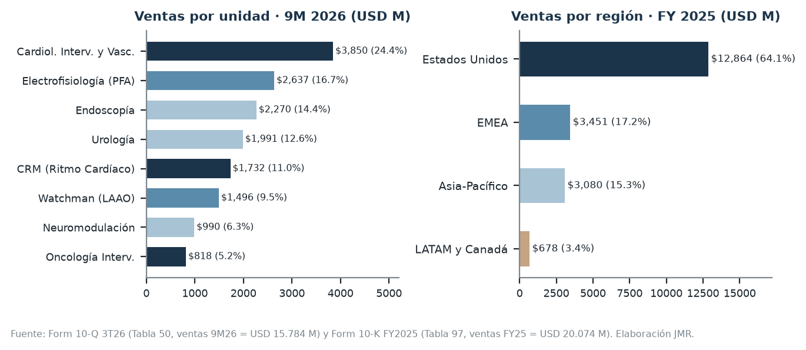
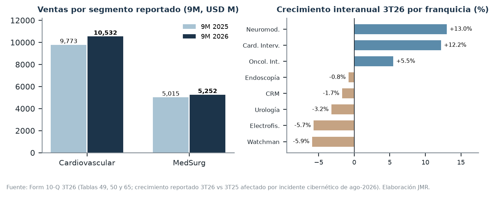
Los clientes finales son sistemas hospitalarios, redes integradas de salud (IDN), grupos de compra hospitalaria (GPO) y centros ambulatorios, fuertemente fragmentados: ningún cliente individual alcanza el 10 % de las ventas consolidadas (Form 10-K FY2025). La venta exige fuerza comercial clínica altamente especializada que asiste al médico dentro de la sala de hemodinamia o electrofisiología, lo que explica que SG&A absorba el 33,4 % de las ventas en 9M 2026 (USD 5.266 M).
La huella manufacturera es global y concentrada en plantas especializadas de alta regulación (Estados Unidos, Irlanda, Costa Rica, Puerto Rico y Malasia), con controles estrictos de la FDA y normativas europeas MDR. Esa concentración industrial —que optimiza costos y fiscalidad— amplificó el golpe del ciberataque de agosto de 2026 al interrumpir el enlace ERP entre producción, inventarios y logística.
Un rasgo definitorio del modelo es que el crecimiento histórico de BSX nunca ha sido puramente orgánico. Entre 2021 y 2025, la compañía invirtió USD 11.844 M en efectivo en adquisiciones (incluyendo Baylis Medical, Preventice, Lumenis Surgical, Relievant, Axonics por ~USD 3.700 M, Silk Road Medical, Bolt Medical y SoniVie), además de USD 930 M en 9M 2026. Esta estrategia de «adquirir categorías de crecimiento alto y escalarlas con la red comercial global» crea valor cuando se compra a múltiplos disciplinados, pero deja un balance cargado de fondo de comercio (USD 18.736 M) e intangibles (USD 6.860 M) y obliga a modelar la reinversión real por encima del capex contable.
La trayectoria financiera de Boston Scientific combina estabilidad notable en márgenes brutos con una mejora estructural del margen operativo desde el bache pandémico de FY2020 (cuando la suspensión de procedimientos electivos redujo el EBIT a −USD 80 M). A partir de FY2022, el apalancamiento comercial de Cardiovascular impulsó el EBITDA desde USD 2.785 M (22,0 %) hasta USD 5.364 M en LTM26 (25,5 %).
Sin embargo, el tercer trimestre de 2026 marca un punto de inflexión nítido: tras alcanzar USD 5.442 M de ingresos y 21,6 % de margen EBIT GAAP en 2T26, los ingresos cayeron secuencialmente a USD 5.138 M y el margen EBIT retrocedió a 16,1 % (USD 828 M), presionado por menor absorción fabril durante la parada informática, mayor costo de suministros y USD 81 M de cargos legales.
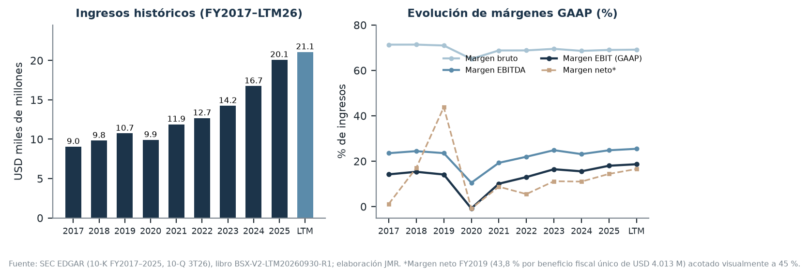
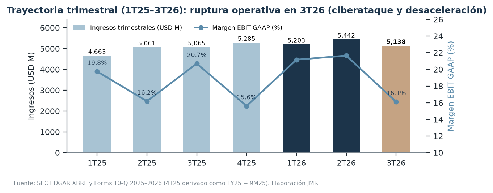
Siguiendo el estándar de presentación homologada del contrato v1.5.6 (patrón MELI R9), los tres estados financieros siguientes se generan directamente desde el módulo A-1.2 del expediente vigente (SEC EDGAR XBRL 10-K originales FY2017–FY2025 y LTM al 30-sep-2026 separado). Todas las partidas contables se muestran en valores absolutos (USD millones) y cada ratio en su unidad natural.
| Concepto | Unidad | FY 2017 | FY 2018 | FY 2019 | FY 2020 | FY 2021 | FY 2022 | FY 2023 | FY 2024 | FY 2025 | LTM 2026-09-30 |
|---|---|---|---|---|---|---|---|---|---|---|---|
| Ingresos totales | USD M | 9.048 | 9.823 | 10.735 | 9.913 | 11.888 | 12.682 | 14.240 | 16.747 | 20.074 | 21.070 |
| Ingresos % variación (ƒ) | % | N/D | 8,57 % | 9,28 % | -7,66 % | 19,92 % | 6,68 % | 12,29 % | 17,61 % | 19,87 % | N/D |
| Costo de ventas | USD M | 2.593 | 2.813 | 3.116 | 3.465 | 3.711 | 3.956 | 4.345 | 5.257 | 6.221 | 6.502 |
| Utilidad bruta (ƒ) | USD M | 6.455 | 7.010 | 7.619 | 6.448 | 8.177 | 8.726 | 9.895 | 11.490 | 13.853 | 14.568 |
| Margen bruto (ƒ) | % | 71,34 % | 71,36 % | 70,97 % | 65,05 % | 68,78 % | 68,81 % | 69,49 % | 68,61 % | 69,01 % | 69,14 % |
| Gastos de venta, generales y administrativos | USD M | 3.294 | 3.569 | 3.941 | 3.787 | 4.359 | 4.520 | 5.190 | 5.984 | 6.887 | N/D |
| Investigación y desarrollo | USD M | 997 | 1.113 | 1.174 | 1.143 | 1.204 | 1.323 | 1.414 | 1.615 | 2.052 | 2.158 |
| Utilidad operativa (EBIT) (ƒ) | USD M | 1.285 | 1.506 | 1.518 | -80 | 1.199 | 1.649 | 2.343 | 2.603 | 3.613 | 3.932 |
| Margen operativo (ƒ) | % | 14,20 % | 15,33 % | 14,14 % | -0,81 % | 10,09 % | 13,00 % | 16,45 % | 15,54 % | 18,00 % | 18,66 % |
| Gasto por intereses | USD M | 229 | 241 | 473 | 361 | 341 | 470 | 265 | 305 | 349 | 375 |
| Utilidad antes de impuestos | USD M | 933 | 1.422 | 687 | -79 | 1.076 | 1.141 | 1.985 | 2.282 | 3.385 | 3.655 |
| Provisión para impuestos | USD M | 828 | -249 | -4.013 | 2 | 36 | 443 | 393 | 436 | 493 | 162 |
| Tasa efectiva de impuestos (ƒ) | % | 88,75 % | -17,51 % | -584,13 % | -2,53 % | 3,35 % | 38,83 % | 19,80 % | 19,11 % | 14,56 % | 4,43 % |
| Utilidad neta consolidada | USD M | 104 | 1.671 | 4.700 | -82 | 1.041 | 698 | 1.592 | 1.846 | 2.892 | N/D |
| Utilidad neta atribuible a accionistas comunes | USD M | 104 | 1.671 | 4.700 | -82 | 1.041 | 698 | 1.592 | 1.846 | 2.892 | 3.493 |
| Margen neto (ƒ) | % | 1,15 % | 17,01 % | 43,78 % | -0,83 % | 8,76 % | 5,50 % | 11,18 % | 11,02 % | 14,41 % | 16,58 % |
| EBITDA (ƒ) | USD M | 2.129 | 2.400 | 2.529 | 1.043 | 2.292 | 2.785 | 3.539 | 3.872 | 4.981 | 5.364 |
| Margen EBITDA (ƒ) | % | 23,53 % | 24,43 % | 23,56 % | 10,52 % | 19,28 % | 21,96 % | 24,85 % | 23,12 % | 24,81 % | 25,46 % |
| BPA diluido | USD/acción | 0,08 | 1,19 | 3,33 | -0,08 | 0,69 | 0,45 | 1,07 | 1,25 | 1,94 | N/D |
| Acciones promedio ponderado diluidas | acciones M | 1.392,70 | 1.401,40 | 1.410,60 | 1.416,70 | 1.433,80 | 1.439,70 | 1.463,50 | 1.485,90 | 1.494,50 | N/D |
Fuente: estados financieros A-1.2 del expediente vigente; importes en millones de USD. ƒ = calculado con fórmula; N/D = no disponible o no calculable. CAPEX y otras salidas conservan la convención de signos de A-1.2.
| Concepto | Unidad | FY 2017 | FY 2018 | FY 2019 | FY 2020 | FY 2021 | FY 2022 | FY 2023 | FY 2024 | FY 2025 | LTM 2026-09-30 |
|---|---|---|---|---|---|---|---|---|---|---|---|
| Efectivo y equivalentes | USD M | 188 | 146 | 217 | 1.734 | 1.925 | 928 | 865 | 414 | 1.965 | 609 |
| Inventarios | USD M | 1.078 | 1.166 | 1.579 | 1.351 | 1.610 | 1.867 | 2.484 | 2.810 | 2.943 | 3.317 |
| Activos corrientes totales (ƒ) | USD M | 3.822 | 4.003 | 4.699 | 6.694 | 6.317 | 5.760 | 6.514 | 6.920 | 8.794 | 8.164 |
| Propiedades, planta y equipo netos | USD M | 1.697 | 1.782 | 2.079 | 2.084 | 2.252 | 2.446 | 2.859 | 3.294 | 4.036 | N/D |
| Intangibles netos | USD M | 5.837 | 6.372 | 7.886 | 5.917 | 6.121 | 5.902 | 6.003 | 6.684 | 7.019 | N/D |
| Crédito mercantil (goodwill) | USD M | 6.998 | 7.911 | 10.176 | 9.951 | 11.988 | 12.920 | 14.387 | 17.089 | 18.282 | N/D |
| Activos totales (ƒ) | USD M | 19.042 | 20.999 | 30.565 | 30.777 | 32.229 | 32.469 | 35.136 | 39.395 | 43.673 | 45.461 |
| Cuentas por pagar | USD M | 530 | 349 | 542 | 513 | 794 | 862 | 942 | 960 | 1.144 | N/D |
| Pasivos corrientes totales (ƒ) | USD M | 5.654 | 5.260 | 4.866 | 3.681 | 4.274 | 3.803 | 4.933 | 6.399 | 5.439 | 5.982 |
| Deuda de corto plazo | USD M | 1.801 | 2.253 | 1.416 | 13 | 261 | 20 | 531 | 1.778 | 299 | N/D |
| Deuda de largo plazo | USD M | 3.815 | N/D | N/D | N/D | N/D | N/D | N/D | N/D | N/D | N/D |
| Porción corriente de arrendamientos | USD M | N/D | N/D | N/D | N/D | N/D | N/D | N/D | N/D | 1 | N/D |
| Arrendamientos (largo plazo) | USD M | N/D | N/D | N/D | N/D | N/D | N/D | N/D | N/D | 122 | N/D |
| Pasivos totales (ƒ) | USD M | 12.030 | 12.273 | 16.688 | 15.451 | 15.607 | 14.896 | 15.606 | 17.392 | 19.201 | 19.588 |
| Patrimonio de accionistas comunes | USD M | N/D | N/D | N/D | N/D | 16.622 | 17.573 | 19.282 | 21.770 | 24.233 | N/D |
| Patrimonio total (ƒ) | USD M | 7.012 | 8.726 | 13.877 | 15.326 | 16.622 | 17.573 | 19.530 | 22.003 | 24.472 | 25.873 |
| Deuda total (corto + largo + arrendamientos) (ƒ) | USD M | 5.616 | 7.056 | 10.008 | 9.143 | 9.065 | 8.935 | 9.102 | 10.746 | 11.436 | 11.953 |
Fuente: estados financieros A-1.2 del expediente vigente; importes en millones de USD. ƒ = calculado con fórmula; N/D = no disponible o no calculable. CAPEX y otras salidas conservan la convención de signos de A-1.2.
| Concepto | Unidad | FY 2017 | FY 2018 | FY 2019 | FY 2020 | FY 2021 | FY 2022 | FY 2023 | FY 2024 | FY 2025 | LTM 2026-09-30 |
|---|---|---|---|---|---|---|---|---|---|---|---|
| Utilidad neta | USD M | 104 | 1.671 | 4.700 | -82 | 1.041 | 698 | 1.592 | 1.846 | 2.892 | 3.493 |
| Depreciación y amortización | USD M | 844 | 894 | 1.011 | 1.123 | 1.093 | 1.136 | 1.196 | 1.269 | 1.368 | 1.432 |
| Compensación basada en acciones | USD M | 127 | 140 | 157 | 170 | 194 | 220 | 233 | 266 | 299 | 313 |
| Flujo de efectivo operativo (ƒ) | USD M | 1.426 | 310 | 1.836 | 1.508 | 1.870 | 1.526 | 2.503 | 3.435 | 4.534 | 4.234 |
| Inversiones de capital (CAPEX) | USD M | -319 | -316 | -461 | -376 | -554 | -588 | -711 | -790 | -876 | -903 |
| Flujo de efectivo de inversión (ƒ) | USD M | -1.010 | -1.921 | -5.041 | -411 | -1.597 | -2.011 | -2.574 | -5.687 | -2.640 | N/D |
| Flujo de efectivo de financiación (ƒ) | USD M | 110 | 1.432 | 2.973 | 293 | -95 | -548 | 5 | 1.814 | -395 | -1.423 |
| Recompras de acciones comunes | USD M | N/D | 0 | 0 | -535 | 0 | 0 | N/D | N/D | N/D | N/D |
| Dividendos pagados a accionistas comunes | USD M | N/D | 0 | 0 | -28 | -55 | -55 | -28 | 0 | N/D | N/D |
| Flujo de caja libre (CFO − CAPEX) (ƒ) | USD M | 1.107 | -6 | 1.375 | 1.132 | 1.316 | 938 | 1.792 | 2.645 | 3.658 | 3.331 |
| Margen de flujo libre (ƒ) | % | 12,23 % | -0,06 % | 12,81 % | 11,42 % | 11,07 % | 7,40 % | 12,58 % | 15,79 % | 18,22 % | 15,81 % |
| Cambio neto en efectivo (ƒ) | USD M | N/D | -42 | 71 | 1.517 | 191 | -997 | -63 | -451 | 1.551 | N/D |
Fuente: estados financieros A-1.2 del expediente vigente; importes en millones de USD. ƒ = calculado con fórmula; N/D = no disponible o no calculable. CAPEX y otras salidas conservan la convención de signos de A-1.2.
La conversión de beneficios en flujo operativo es históricamente sólida (CFO LTM USD 4.234 M; Capex USD 903 M, apenas 4,3 % de ingresos). No obstante, una lectura disciplinada del flujo libre debe incorporar dos matices críticos. Primero, la compensación basada en acciones (SBC) suma USD 313 M LTM (1,5 % de ventas) y el crecimiento ha requerido desembolsos promedio de USD 2.369 M anuales en adquisiciones en 2021–2025. Segundo, la tasa efectiva GAAP de 9M 2026 (4,5 %, USD 132 M sobre USD 2.955 M de UAI) está artificialmente reducida por un beneficio fiscal discreto en el primer semestre; la tasa de operaciones continuas es 17,4–17,6 % (Form 10-Q 3T26, Nota G).
Al 30-sep-2026, la deuda financiera total en balance suma USD 11.953 M (USD 1.044 M corriente y USD 10.909 M a largo plazo, incluyendo USD 124 M de arrendamientos financieros), frente a USD 609 M de efectivo y equivalentes —una deuda neta operativa de USD 11.344 M (~2,1× EBITDA LTM)— y USD 2.292 M adicionales en Other investments (USD 1.273 M por método de participación y USD 1.020 M en valores estratégicos). Los arrendamientos operativos (USD 536 M al 31-dic-2025; activos por derecho de uso de USD 537 M al 30-sep-2026) representan un gasto anual de USD 117 M ya deducido del EBIT. La liquidez y cobertura de intereses (10,5× EBIT/intereses LTM) son holgadas en situación independiente, pero cambiarán materialmente tras el cierre de Penumbra.
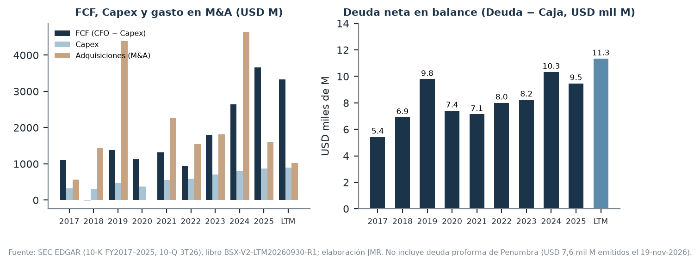
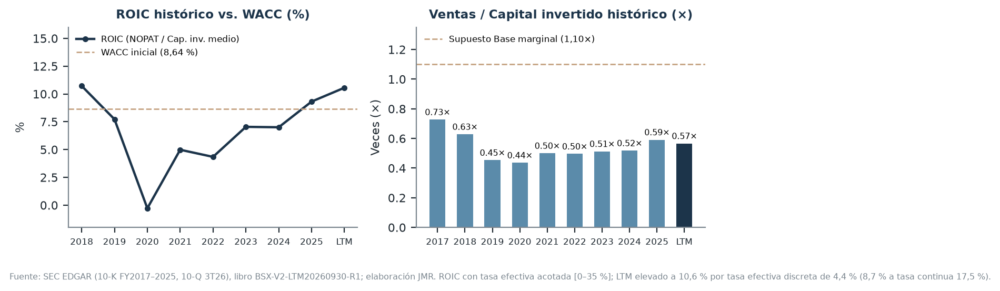
Con USD 2.158 M LTM en investigación y desarrollo (10,2 % de ventas) y ciclos regulatorios de ~5 años en dispositivos médicos, activamos el conversor de I+D de Damodaran en el libro oficial con vida útil de 5 años sobre las cohortes verificadas (FY2021–FY2025 y LTM26). El resultado eleva el EBIT histórico en +USD 636,4 M (de USD 3.932 M a USD 4.568,4 M; margen ajustado de 21,68 % frente a 18,66 % GAAP), crea un activo de investigación de USD 5.598,8 M y una amortización anual de USD 1.521,6 M. Conforme a la guía de calibración v1.5.3, probamos el efecto aislado manteniendo constantes las hipótesis prospectivas en base GAAP homogénea: el impacto sobre el valor por acción es exactamente USD 0,00 (USD 37,15 con y sin conversor), evitando cualquier doble conteo.
Michael F. Mahoney (CEO desde noviembre de 2012 y presidente del consejo desde 2016) es el arquitecto de la transformación de Boston Scientific desde una empresa sobreendeudada tras la compra de Guidant en 2006 hasta el gigante cardiovascular actual. Su permanencia de catorce años aporta continuidad estratégica, aunque la combinación de los cargos de presidente del consejo y CEO (mitigada por un director independiente principal) concentra poder en las grandes decisiones de M&A.
En 2025–2026 la compañía renovó su primera línea con talento interno de muy larga trayectoria: Jonathan R. Monson (52 años, en BSX desde 1999) sustituyó a Daniel J. Brennan como CFO el 30 de junio de 2025; el 7 de octubre de 2026 (Form 8-K Item 5.02) se creó/cubrió el cargo de Chief Operating Officer (COO) promoviendo a Joseph M. Fitzgerald (63 años, en BSX desde 1990 y hasta ahora líder de Cardiovascular) efectivo el 1 de enero de 2027, coincidiendo con el retiro anunciado de Arthur C. Butcher (MedSurg y APAC). Adicionalmente, en febrero de 2026 (8-K del 23-feb-2026) el consejo amplió temporalmente su tamaño de 10 a 12 miembros incorporando a Catherine R. Smith (Comité de Auditoría) y Christophe P. Weber (CEO de Takeda, Comité de Ciencia y Tecnología), reforzando la supervisión clínica y financiera.
| Ejecutivo (DEF 14A 2026) | Cargo | Antigüedad BSX | Salario 2025 | Acciones / Opciones | Total 2025 (USD) |
|---|---|---|---|---|---|
| Michael F. Mahoney | Chairman, Presidente y CEO | Desde 2011 (CEO 2012) | 1.442.603 | 17.358.036 | 23.532.050 |
| Joseph M. Fitzgerald | EVP Cardiovasc. → COO (2027) | Desde 1990 | 892.604 | 5.496.745 | 8.042.997 |
| Arthur C. Butcher | EVP MedSurg/APAC (retiro 2027) | Desde 1997 | 744.822 | 4.397.234 | 6.534.719 |
| Jonathan R. Monson | EVP y CFO (desde jun-2025) | Desde 1999 | 591.848 | 2.795.402 | 6.083.679 |
| Jeffrey B. Mirviss | EVP Intervenciones Periféricas | Desde 2006 | 702.042 | 2.545.555 | 4.159.959 |
| Vance R. Brown | SVP General Counsel | Desde 2012 | 659.086 | 2.198.596 | 3.920.644 |
Fuente: Proxy Statement DEF 14A 2026 (acc. 0000885725-26-000025, Tabla Resumen de Compensación). El total incluye bono anual y otros conceptos.
El paquete ejecutivo se vincula principalmente a métricas ajustadas (crecimiento orgánico de ventas, BPA ajustado y TSR relativo en unidades PSU; Say-on-Pay aprobado por el 91,9 % en 2025, 92,7 % en 2024 y 92,6 % en 2023; Plan de Bono 2027 aprobado el 17-nov-2026 según 8-K). El riesgo clásico de incentivar el crecimiento orgánico y el BPA ajustado —excluyendo amortización de intangibles y costos de integración— es crear un sesgo estructural hacia adquisiciones caras que impulsan las métricas ajustadas mientras diluyen el ROIC sobre el capital total invertido.
Ese sesgo resulta visible en 2026 por partida doble: primero, BSX pactó pagar USD 14.500 M (~10× ventas) por Penumbra justo antes de que se enfriara su propio negocio base y con la acción de BSX cerca de máximos; segundo, en mayo-junio de 2026 ejecutó un ASR de USD 2.000 M (~USD 50/acción) que hoy presenta una minusvalía contable de ~16 % y consumió efectivo que meses después tuvo que reponerse con deuda senior al 5,375–5,875 % (8-K del 20-nov-2026). Por el lado positivo, la empresa mantiene calificación de grado de inversión A3 / A− / A y ha evitado dividendos rígidos que resten flexibilidad.
Electrofisiología y la guerra del PFA. El lanzamiento de FARAPULSE otorgó a Boston Scientific una ventaja temporal extraordinaria durante 2024 y el primer semestre de 2025, llegando a crecimientos interanuales de tres dígitos al arrebatar cuota a la ablación térmica tradicional (radiofrecuencia y crioablación) dominada por Biosense Webster (J&J). En 2026 el terreno cambió: Medtronic ganó tracción con su plataforma integrada de mapeo y ablación Affera Sphere-9 y PulseSelect; Johnson & Johnson obtuvo marca CE para Varipulse Pro y lanzó en abril de 2026 un estudio clínico comparativo directo contra FARAPULSE en 466 pacientes con fibrilación auricular persistente; y Abbott avanzó con Volt PFA y TactiFlex Duo. Aunque BSX defendió su liderazgo clínico en el congreso HRS 2026 con los resultados positivos del ensayo AVANT GUARD (FARAPULSE superior a fármacos como primera línea en FA persistente), las ventas de Electrofisiología cayeron −5,7 % interanual en 3T26 (USD 816 M vs. USD 865 M), combinando disrupción por el ciberataque y competencia creciente.
Watchman (LAAO) frente a Abbott Amulet 360 y anticoagulantes orales. Tras crecer cerca del 30 % en 2025, Watchman frenó de golpe en 2026 (+5,1 % en 9M26 y −5,9 % en 3T26, USD 482 M). Abbott recibió la marca CE para su implante de nueva generación Amulet 360 en agosto de 2026 y presentó resultados a 12 meses del estudio VERITAS en noviembre de 2026 comparables en seguridad a Watchman FLX. Al mismo tiempo, la discusión clínica tras el ensayo CHAMPION-AF mantiene vivo el debate sobre el alcance del cierre mecánico frente a los anticoagulantes orales directos (DOAC). Como contrapeso positivo, J&J se retiró del segmento en octubre de 2026 tras suspender el estudio de su dispositivo Laminar, dejando la categoría consolidada en un duopolio BSX–Abbott.
Cardiología intervencionista, MedSurg y apuesta por Penumbra. Fuera de EP y Watchman, la posición competitiva sigue siendo robusta: Cardiología Intervencionista y Vascular creció +12,2 % en 3T26 (USD 1.273 M) y Neuromodulación +13,0 % (USD 331 M). En Endoscopía BSX compite con Olympus y Cook; en Urología (reforzada con Axonics en neuromodulación sacra) disputa cuota a Medtronic; y con la adquisición pendiente de Penumbra busca liderazgo en trombectomía mecánica y reentrada en neurovascular frente a Stryker, Medtronic e Inari (adquirida por Stryker). Nota de fuentes: no existe una fuente primaria pública verificable con cuotas exactas de mercado global por subcategoría (N/D); el análisis competitivo se apoya en el 10-K FY2025, el 10-Q 3T26 y prensa médica especializada rotulada como fuente secundaria.
| Competidor | Áreas de solapamiento directo | Fortaleza relativa del rival | Defensa de Boston Scientific |
|---|---|---|---|
| Medtronic (MDT) | PFA/EP, CRM, cardiología estructural, neuromodulación, urología | Escala global, plataforma dual mapeo/ablación Affera Sphere-9, CRM | Base instalada FARAPULSE, evidencia AVANT GUARD, crecimiento en intervencionismo |
| Abbott (ABT) | LAAO (Amulet 360), EP (Volt/TactiFlex), CRM, vascular | Amulet 360 con CE mark y datos VERITAS; ecosistema EnSite X | Liderazgo histórico de Watchman FLX Pro y amplitud de portafolio cardíaco |
| J&J MedTech (JNJ) | Electrofisiología (Biosense Webster / Varipulse Pro), intervencionismo | Base instalada líder en mapeo 3D CARTO; gran músculo comercial | Salida de J&J de LAAO (Laminar); ventaja de seguridad/rapidez de FARAPULSE |
| Stryker / Olympus | Neurovascular (post-Penumbra), trombectomía, endoscopía | Stryker domina neurovascular/Inari; Olympus lidera endoscopios reutilizables | Endoscopios desechables (EXALT), portafolio Penumbra pendiente de cierre |
| Fortalezas | Debilidades |
|---|---|
| Portafolio diversificado en 8 unidades con márgenes de segmento ~32 % y >90 % consumibles recurrentes; sólida red comercial hospitalaria en >100 países; USD 2.158 M/año en I+D y ensayos clínicos de referencia (AVANT GUARD). | Alta dependencia de M&A serial (USD 25,6 mil M en goodwill e intangibles, 56 % de activos totales) que comprime el ROIC contable (~9 %); vulnerabilidad operativa expuesta por el ciberataque de ago-2026 y retiros Clase I de FDA. |
| Oportunidades | Amenazas |
| Adopción de primera línea de PFA en fibrilación auricular; expansión en centros ambulatorios (ASC); integración de Penumbra en trombectomía y neurovascular (~USD 1,4 mil M ventas, +17 %); crecimiento en Asia-Pacífico y emergentes. | Pérdida de cuota en PFA (Medtronic/J&J/Abbott) y LAAO (Amulet 360); escrutinio antimonopolio FTC o destrucción de valor en Penumbra; nuevos retiros regulatorios o litigios; presión de precios hospitalarios y compras por volumen en China (VBP). |
En la taxonomía del ciclo de vida corporativo de Aswath Damodaran, Boston Scientific se ubica en la madurez de crecimiento: ya posee escala global (USD 21.070 M de ingresos), generación robusta de efectivo y calificación crediticia A−/A3, pero todavía depende de oleadas de innovación y adquisiciones para crecer por encima del volumen demográfico de procedimientos (+4–5 % anual). Históricamente, BSX ha atravesado dos ciclos claros: el ciclo de desapalancamiento post-Guidant (2006–2015), el ciclo de expansión diversificada (2016–2023, interrumpido brevemente por COVID-19 en 2020 cuando el volumen electivo cayó 7,7 %) y el súper-ciclo FARAPULSE/Watchman (2024–2025). En 2026 entra en una fase de digestión de ese pico, donde las bases comparables exigentes coinciden con la normalización de precios y lanzamientos rivales.
Los datos oficiales de FRED (Reserva Federal de St. Louis) al 19–20 de noviembre de 2026 describen una economía estadounidense en expansión madura con condiciones financieras restrictivas en el tramo largo de la curva: la banda objetivo de la Reserva Federal se sitúa en 3,75–4,00 % (tasa efectiva de fondos federales 3,88 % en oct-2026), el desempleo permanece bajo en 4,1 % (oct-2026) y el IPC urbano (CPIAUCSL) marcó 337,48 en octubre de 2026 (frente a 334,13 en agosto). Pese a unos diferenciales de crédito corporativo todavía benignos (diferencial OAS ICE BofA grado BBB en 117 pb al 19-nov-2026), el rendimiento del Tesoro de EE. UU. a 10 años cotiza en 5,04 % (FRED 19-nov; 4,91 % en Yahoo ^TNX al cierre del 20-nov; 5,15 % en la convención de corte de la biblioteca JMR).
Para Boston Scientific el canal macro es dual: la demanda clínica de procedimientos cardiovasculares y oncológicos es estructuralmente defensiva (baja elasticidad al PIB), pero el costo del capital y el costo de financiar M&A son altamente sensibles a las tasas largas. La prueba directa está en la emisión del 19-nov-2026 (Form 8-K): BSX colocó bonos en dólares a 3–10 años a cupones de 5,375 % a 5,875 %, muy por encima del costo medio de su deuda anterior (0,625 % a 4,00 %).
Bajo el marco de Howard Marks, el mercado de valores estadounidense muestra en noviembre de 2026 una bifurcación marcada: tolerancia todavía generosa en crédito (diferenciales estrechos), pero extrema selectividad y castigo asimétrico en renta variable ante decepciones de crecimiento cuando la tasa libre de riesgo ronda el 5 %. En BSX el péndulo osciló desde el optimismo extremo de 2025 (múltiplo EV/EBITDA de 35× y precio >USD 100) hasta el pesimismo intenso de noviembre de 2026 (13,3× EV/EBITDA y USD 41,98). Sin embargo, como enseña Marks, una caída brusca no garantiza automáticamente estar en el suelo de valoración si las expectativas fundamentales siguen ajustándose a la baja.
| Ciclo | Diagnóstico (nov-2026) | Métricas clave verificadas | Canal hacia supuestos DCF | Señales de cambio |
|---|---|---|---|---|
| Empresa / Sector | Digestión post-pico FARAPULSE; choque operativo | Ventas 3T26 +1,5 %; guía 4T26 −1 a −3 %; EBIT 3T26 16,1 % | Crecimiento año 1 (+1,5 % Base), margen año 1 (18,5 %) | Retorno a crecimiento orgánico ≥6 % en EP y Watchman |
| Macro / Monetario | Empleo firme; curva larga tensionada (~5 %) | Fed 3,75–4,00 %; 10Y 4,91–5,04 %; desempleo 4,1 %; BBB 117 pb | Rf 5,15 % (conv.), WACC 8,64→8,54 %, Kd 6,04 % | Descenso sostenido del Tesoro 10A <4,25 % o repunte OAS >200 pb |
| Mercado (Marks) | Descompresión abrupta y desconfianza en guía | BSX −58,8 % desde 52W high; EV/EBITDA 35× → 13,3× | Múltiplos de diagnóstico y brecha precio/MOS | Revisión alcista de estimaciones 2027 y cierre ordenado de Penumbra |
| Riesgo | Probabilidad / Severidad | Mecanismo de contagio económico | Mitigantes y cobertura |
|---|---|---|---|
| 1. Erosión competitiva en PFA y Watchman | Alta / Alta | Compresión de crecimiento años 2–5 hacia 2–3 % y menor margen bruto por descuentos hospitalarios. | Evidencia clínica AVANT GUARD; salida de J&J de LAAO; diversificación en otras 6 unidades (74 % ventas). |
| 2. Ejecución, apalancamiento o bloqueo FTC en Penumbra | Media-Alta / Alta | Sobrepago (~10× ventas), salto de deuda neta hacia >3,5× EBITDA, dilución ~27 % en acciones o tarifa de ruptura de USD 900 M. | Escaso solapamiento de productos (mitiga riesgo antimonopolio); calificación A−/A3; fuerte generación de CFO. |
| 3. Secuelas del ciberataque (ago-2026) | Media / Media-Alta | Pérdida persistente de cuota si hospitales migraron pedidos a rivales; gastos de remediación y litigios de datos. | Contención declarada sin acceso no autorizado activo (8-K 8-sep-2026); recuperación gradual de plantas. |
| 4. Retiros FDA Clase I y calidad fabril | Media / Alta | Suspensiones temporales de venta, reemplazos gratuitos, daño reputacional y provisiones legales (Accolade, Enroute, Axios). | Sistemas de calidad multi-planta y actualizaciones de software (Brady SMR6); seguros parciales. |
| 5. Normalización fiscal y litigios recurrentes | Alta / Media | Salto de tasa efectiva desde 4,4 % LTM hacia 18–24 % (Pilar Dos OCDE, fin de beneficios discretos) y salidas de caja legales (USD 157 M en 9M26). | Ya modelado en nuestro DCF (convergencia lineal a tasa marginal de 24 %); reservas fiscales documentadas. |
| 6. Compras centralizadas (VBP China), aranceles y divisas | Media / Media | Recortes de precio en Asia-Pacífico (15,3 % ventas), fricciones arancelarias en manufactura (Costa Rica/Irlanda/Malasia) y tipo de cambio EUR/USD. | Coberturas cambiarias corporativas y emisión de deuda en euros (€4.250 M) como cobertura natural. |
Fuente: Item 1A Risk Factors del Form 10-K FY2025 y Form 10-Q 3T26, Forms 8-K 2026 y elaboración JMR.
Nivel 1 — Corrección de valoración (sin daño terminal): es lo ocurrido entre enero y noviembre de 2026. Cuando una compañía que cotizaba a 35× EBITDA pasa a crecer 3–4 % en un entorno de tasas al 5 %, el mercado ajusta el múltiplo sin que el negocio desaparezca. Nivel 2 — Deterioro estructural de franquicia: ocurre si la competencia en PFA (Medtronic Affera, J&J Varipulse Pro) y LAAO (Abbott Amulet 360) convierte esas dos categorías en mercados de precio plano, mientras BSX sigue necesitando gastar >USD 2.000 M anuales en M&A solo para sostener el volumen, hundiendo el ROIC por debajo del WACC de forma crónica. Nivel 3 — Ruptura existencial o de capital permanente: el precedente histórico existe dentro de la propia compañía: tras la adquisición apalancada de Guidant en 2006 (USD 27.000 M) seguida de problemas de calidad en desfibriladores y stents, la acción de BSX perdió más del 80 % y tardó más de una década en recuperarse.
Qué protege a la empresa: ocho unidades clínicas diversificadas (ninguna supera el 25 % de ventas), alta barrera regulatoria FDA/MDR que impide entrantes de bajo costo, recurrencia de consumibles ligados a patologías cardiovasculares crónicas y una base de flujo operativo superior a USD 4.000 M anuales. Qué NO protege al accionista: la escala no impide sobrepagar por adquisiciones (Penumbra a 10× ventas), no blinda frente a un competidor con mejor tecnología clínica en ensayos aleatorizados, no inmuniza contra decretos de consentimiento de la FDA tras retiros Clase I repetidos y no protege contra la erosión de capital cuando la deuda supera 3,5–4× EBITDA con tasas al 5,5–6 %.
Las cuatro simulaciones siguientes se calcularon directamente con el motor FCFF Simple Ginsu sobre el expediente vigente. Se rotulan explícitamente como ilustrativas y no oficiales: no sustituyen los escenarios oficiales ni llevan probabilidad asignada.
| Prueba de estrés (ilustrativa · no oficial) | Parámetros sometidos a estrés | Valor/acc. (USD) | Var. vs. Base | Var. vs. precio |
|---|---|---|---|---|
| S1: Erosión PFA/Watchman | Año 1 −3 %, años 2–5 +1 %, margen objetivo 16 %, S2C 0,80×, ROIC 8,5 % | USD 16.43 | -54.7 % | -60.9 % |
| S2: Recalls + choque ciber/litigio | Año 1 −5 %, años 2–5 +2 %, margen año 1 14 %, objetivo 16,5 %, S2C 0,80×, ROIC 9 % | USD 16.62 | -54.2 % | -60.4 % |
| S3: Tropiezo Penumbra + deuda cara | WACC +150 pb, año 1 0 %, años 2–5 +4 %, margen 18 %, S2C 0,75×, ROIC 9,5 % | USD 15.46 | -57.4 % | -63.2 % |
| S4: Compresión combinada severa | WACC +100 pb, g terminal 2,5 %, año 1 −4 %, años 2–5 +1,5 %, margen 15 %, ROIC 8,5 % | USD 11.82 | -67.4 % | -71.8 % |
Fuente: simulaciones ilustrativas con el motor V2 sobre BSX-V2-LTM20260930-R2. Sin efecto sobre la valoración publicada.
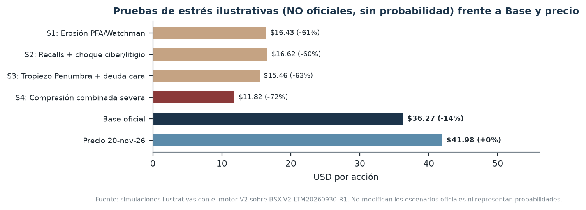
| Eje de debate | Tesis alcista (Bull) | Tesis bajista (Bear) | Evidencia verificada al corte |
|---|---|---|---|
| Naturaleza de la caída del 3T26 | Choque puntual por el ciberataque de ago-2026 (−300 pb) y ajuste temporal de inventarios; los pedidos vuelven en 2027. | Watchman ya frenaba desde abril/julio antes del ataque; la guía 4T26 (−1 a −3 % org.) y el aviso sobre 2027 revelan pérdida estructural de impulso. | Ambas fuerzas actúan: el ataque explicó ~300 pb en 3T26, pero dos recortes de guía ocurrieron antes de agosto. |
| Foso en PFA y Watchman | FARAPULSE lidera por velocidad, seguridad y datos AVANT GUARD; J&J abandonó LAAO dejando un duopolio estable. | Medtronic (Affera) gana cuota en PFA y Abbott (Amulet 360) presiona a Watchman; las ventas de ambas cayeron ~6 % en 3T26. | Electrofisiología −5,7 % y Watchman −5,9 % en 3T26 (10-Q Tabla 49); ensayo cabeza a cabeza de J&J en curso. |
| Compra de Penumbra (USD 14.500 M) | Añade ~USD 1.400 M de ventas creciendo >17 % en trombectomía/neurovascular con sinergias comerciales globales. | Precio exigente (~10× ventas), deuda adicional (~USD 7,6 mil M emitidos al 5,4–5,9 % en USD) y riesgo FTC/integración. | 8-K del 15-ene y 20-nov-2026; Second Request FTC activo; cierre esperado inicio de 2027. |
| Rentabilidad y valoración | Múltiplo comprimido de 35× a 13,3× EV/EBITDA y ~13,4× P/E forward (consenso); margen ajustado ~28 %. | El margen GAAP real es 18,7 %, la amortización e I+D/M&A son recurrentes y a Rf ~5 % el DCF independiente vale USD 37,15. | P/FCF contable 18,3×; DCF inverso a USD 41,98 exige ~9,8 % de crecimiento años 2–5 (a 23,5 % margen aj. I+D) o ~26,0 % de margen operativo ajustado por I+D. |
Fuente: elaboración JMR sobre Forms 10-K/10-Q/8-K de BSX y fuentes secundarias rotuladas (GNG Research, MedTech Dive).
| Parámetro del motor FCFF Simple Ginsu | Unidad | Conservador | Base | Optimista | Referencia histórica / libro |
|---|---|---|---|---|---|
| Crecimiento de ingresos · Año 1 | % | −1,5 % | +1,5 % | +4,5 % | 3T26 +1,5 %; guía 4T26 −1 a −3 % org. |
| Crecimiento compuesto · Años 2–5 | % | +3,0 % | +6,5 % | +9,5 % | CAGR FY17–FY25: 10,5 % (con M&A) |
| Crecimiento terminal (año 10+) | % | 4,0 % | 4,0 % | 4,0 % | Convención JMR (≤ Rf 5,15 %) |
| Margen operativo aj. I+D · Año 1 | % | 20,5 % | 21,5 % | 22,5 % | LTM26 aj. I+D: 21,68 % (GAAP rep.: 18,7 %) |
| Margen operativo aj. I+D objetivo (Año 5) | % | 20,0 % | 23,5 % | 26,5 % | Base homogénea I+D 5 años (sin salto Año 0→1) |
| Sales to Capital · Años 1–5 y 6–10 | × | 0,80× | 1,00× | 1,20× | Histórico contable 0,57×; sector US ~1,4× |
| ROIC terminal | % | 9,0 % | 11,0 % | 13,5 % | Contable LTM ~8,7 % (tasa 17,5 %) |
| Reinversión terminal implícita (g / ROIC) | % NOPAT | 44,4 % | 36,4 % | 29,6 % | Calculado por fórmula (g = 4,0 % / ROIC) |
| WACC inicial → WACC terminal | % | 8,64 → 8,54 % | 8,64 → 8,54 % | 8,64 → 8,54 % | Fórmula Cost of capital worksheet (A3/A−) |
| Tasa efectiva inicial → Tasa marginal | % | 17,5 → 24,0 % | 17,5 → 24,0 % | 17,5 → 24,0 % | 10-Q 3T26 Nota G: tasa continua ~17,5 % (LTM 4,4 % discreta) |
Fuente: libro oficial BSX-V2-LTM20260930-R2 (hojas «JMR Escenarios», «Input sheet» y «Cost of capital worksheet»).
Crecimiento (Año 1: +1,5 %; Años 2–5: +6,5 % en Base). Entre FY2017 y FY2025 BSX compuso ingresos al 10,5 % anual, pero una parte sustancial provino de adquisiciones (USD 11,8 mil M en cinco años) y del salto inicial de FARAPULSE en 2024–2025. Con la guía de 4T26 apuntando a una contracción orgánica de −1 % a −3 % y el aviso de la dirección de que 2027 será exigente sin Penumbra, extrapolar el 10,5 % histórico sería temerario. El consenso de analistas (fuente secundaria GNG Research, 17-nov-2026, 28 analistas) prevé USD 20.970 M para FY2026 y USD 20.880 M para FY2027 (−0,4 %). Nuestro +1,5 % en Año 1 (sobre LTM de USD 21.070 M) es coherente con esa estabilización; en Años 2–5 proyectamos +6,5 % al normalizarse los envíos post-ciberataque y avanzar Cardiología Intervencionista, Neuromodulación y EP. Invalidador: dos trimestres consecutivos en 2027 con ventas orgánicas negativas en Cardiovascular.
Márgenes operativos ajustados por I+D (21,5 % → 23,5 % en Base). Separamos explícitamente cuatro medidas: margen de segmento (~31,8 %), margen Non-GAAP (~27–28 %), margen GAAP reportado (18,7 % LTM) y margen GAAP ajustado por capitalización de I+D a 5 años (21,68 % LTM; EBIT ajustado USD 4.568,4 M vs. USD 3.932 M reportado). La diferencia frente a Non-GAAP responde a USD 927 M LTM de amortización de intangibles adquiridos (4,4 % de ventas), gastos corporativos (~4,5 %) y litigios/reestructuración (1,4 %). En R2 mantenemos el conversor de I+D activo y homologamos las proyecciones sobre la base ajustada por I+D (21,5 % en Año 1 → 23,5 % en Año 5, +1,8 pp sobre el 21,68 % LTM), eliminando el salto contable artificial Año 0→Año 1 sin adoptar márgenes Non-GAAP que ignoran el costo del M&A. Contraevidencia: si el ritmo de adquisiciones repone la amortización de intangibles o se erosionan los precios en PFA/Watchman, el margen ajustado por I+D difícilmente superará el 20 % (caso Conservador 20,0 %).
Reinversión y Sales-to-Capital (1,00× en Base). El ratio contable actual (USD 21.070 M / USD 37.217 M = 0,57×) está penalizado por USD 25.596 M de fondo de comercio e intangibles pasados, mientras el capex orgánico neto es modesto (USD 903 M vs. depreciación de ~USD 505 M). Usar 1,00× implica reinvertir ~USD 1.250–1.550 M anuales netos en años 2–5 por encima de la depreciación —coherente con capex de crecimiento más adquisiciones complementarias disciplinadas.
| Variación aislada sobre el escenario Base (USD 37,15) | Valor resultante (USD/acc.) | Efecto aislado (USD) | Lectura económica |
|---|---|---|---|
| Base calibrado R2 (referencia oficial) | USD 37,15 | +0,00 | Referencia oficial R2 |
| Tesoro 10A spot 20-nov (4,91 % vs 5,15 %; WACC −24 pb) | USD 39,54 | +2,39 | Sensibilidad moderada |
| Crecimiento Año 1 = +4,0 % (+2,5 pp) | USD 38,22 | +1,07 | Sensibilidad moderada |
| Crecimiento Años 2–5 = +8,5 % (+2,0 pp) | USD 39,99 | +2,85 | Sensibilidad moderada |
| Margen operativo objetivo aj. I+D = 25,5 % (+2,0 pp) | USD 40,99 | +3,85 | Driver principal de valor |
| Sales-to-Capital = 1,30× (+0,30×) | USD 38,72 | +1,58 | Sensibilidad moderada |
| ROIC terminal = 13,5 % (+2,5 pp) | USD 40,07 | +2,92 | Sensibilidad moderada |
| Crecimiento terminal g = 3,5 % (−0,5 pp) | USD 35,85 | −1,30 | Sensibilidad moderada |
| WACC +100 pb (9,64 % → 9,54 %) | USD 29,40 | −7,75 | Driver principal de valor |
Fuente: corridas aisladas de un factor a la vez con el motor V2 sobre BSX-V2-LTM20260930-R2 (guía Damodaran–JMR v1.5.3).
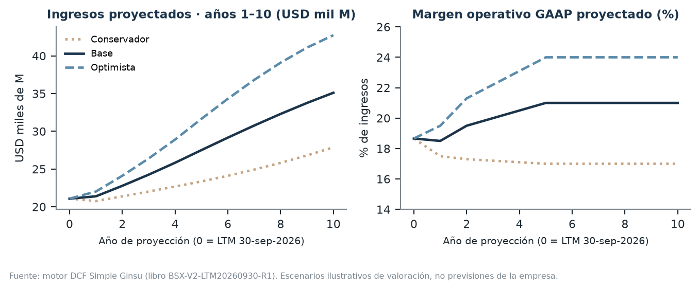
| Período | Crec. | Ingresos | Margen aj. I+D | EBIT aj. I+D | Imp. | NOPAT | Reinv. | FCFF | WACC |
|---|---|---|---|---|---|---|---|---|---|
| Año 1 | 1,5 % | 21.386 | 21,5 % | 4.598 | 17,5 % | 3.793 | 1.390 | 2.403 | 8,64 % |
| Año 2 | 6,5 % | 22.776 | 22,3 % | 5.079 | 17,5 % | 4.190 | 1.480 | 2.710 | 8,64 % |
| Año 3 | 6,5 % | 24.257 | 22,7 % | 5.506 | 17,5 % | 4.543 | 1.577 | 2.966 | 8,64 % |
| Año 4 | 6,5 % | 25.833 | 23,1 % | 5.967 | 17,5 % | 4.923 | 1.679 | 3.244 | 8,64 % |
| Año 5 | 6,5 % | 27.512 | 23,5 % | 6.465 | 17,5 % | 5.334 | 1.651 | 3.683 | 8,64 % |
| Año 6 | 6,0 % | 29.163 | 23,5 % | 6.853 | 18,8 % | 5.565 | 1.604 | 3.961 | 8,62 % |
| Año 7 | 5,5 % | 30.767 | 23,5 % | 7.230 | 20,1 % | 5.777 | 1.538 | 4.239 | 8,60 % |
| Año 8 | 5,0 % | 32.306 | 23,5 % | 7.592 | 21,4 % | 5.967 | 1.454 | 4.513 | 8,58 % |
| Año 9 | 4,5 % | 33.759 | 23,5 % | 7.933 | 22,7 % | 6.133 | 1.350 | 4.782 | 8,56 % |
| Año 10 | 4,0 % | 35.110 | 23,5 % | 8.251 | 24,0 % | 6.271 | 1.404 | 4.866 | 8,54 % |
Fuente: motor FCFF Simple Ginsu (libro BSX-V2-LTM20260930-R2). Importes en USD millones; tasas en %.
De conformidad con el contrato v1.5.6, el DCF independiente refleja el balance verificado al 30-sep-2026 sin anticipar proforma una transacción todavía sujeta a aprobación de la FTC. Sin embargo, su magnitud exige un diagnóstico explícito: BSX acordó adquirir Penumbra por ~USD 14.500 M (73,26 % efectivo ≈ USD 10.620 M; 26,74 % acciones ≈ USD 3.880 M a una relación fija de 3,8721 acciones BSX por acción de Penumbra, lo que a precios actuales representaría ~92 M de acciones o ~6 % de dilución, sujeto a ajuste según la cotización). Para fondear el componente en efectivo, el 19-nov-2026 BSX colocó USD 3.000 M en bonos senior USD (5,375–5,875 %, vencimientos 2029–2036) y €4.250 M (~USD 4.600 M) vía AMS Europe (3,875–4,750 % y flotante 2028), adicionales a la línea de préstamo a plazo de USD 6.000 M firmada en febrero. En términos ilustrativos, tras el cierre previsto para inicios de 2027, la deuda bruta podría acercarse a USD 21–22 mil M (deuda neta ~3,5–3,8× EBITDA proforma), exigiendo un rápido desapalancamiento y una revisión R3 tan pronto se cierre la operación.
Cada cifra del libro se justifica con evidencia del emisor, su contraste con la historia de la empresa y la contraevidencia que la debilita. Las cifras de contraste se calculan con los estados del expediente BSX-V2-LTM20260930-R2 y las pruebas de coherencia, con el mismo motor V2 que reproduce el libro (paridad 0,000 %). Esta sección no modifica ningún supuesto ni valor (2026-11-22).
| Supuesto | Conservador | Base | Optimista | Contraste observado |
|---|---|---|---|---|
| Crecimiento año 1 | -1,5 % | 1,5 % | 4,5 % | LTM +5,0 % sobre FY; último FY 19,9 % |
| Crecimiento anual años 2–5 | 3,0 % | 6,5 % | 9,5 % | CAGR 3 años 16,5 %; 5 años 15,2 % |
| Margen operativo año 1 | 20,5 % | 21,5 % | 22,5 % | Reportado LTM 18,7 % |
| Margen objetivo (año de convergencia) | 20,0 % (año 5) | 23,5 % (año 5) | 26,5 % (año 5) | Promedio 5 FY 14,6 %; rango -0,8 % a 18,0 % |
| Ventas/capital años 1–5 | 0,80× | 1,00× | 1,20× | Incremental 3 años 0,72× |
| Ventas/capital años 6–10 | 0,80× | 1,00× | 1,20× | — |
| ROIC terminal | 9,0 % | 11,0 % | 13,5 % | ROIC contable 8,7 % |
| WACC inicial → terminal | 8,64 % → 8,54 % | 8,64 % → 8,54 % | 8,64 % → 8,54 % | Tasa libre 5,15 %; prima madura 3,387 % |
| Crecimiento terminal (g) | 4,0 % | 4,0 % | 4,0 % | Inferior a la tasa libre |
| Tasa marginal | 24,0 % | 24,0 % | 24,0 % | Efectiva 17,5 % |
| Probabilidad de fracaso | 0 % | 0 % | 0 % | — |
| Valor por acción | US$22,65 | US$37,15 | US$55,82 | Precio US$41,98 |
Fuente: libro oficial y expediente BSX-V2-LTM20260930-R2; cálculos de contraste propios con los estados del expediente. Ventas/capital incremental = Δventas / Δ(patrimonio + deuda − caja) en tres años; ROIC contable = EBIT × (1 − tasa efectiva) / capital invertido.
Escenario Conservador. El ciberataque y la competencia en electrofisiología (FARAPULSE) y en cierre de orejuela (Watchman) frenan el crecimiento a un dígito bajo.
Escenario Base. Transición ordenada en 2027 y recuperación a crecimiento MedTech de dígito medio-alto, con expansión gradual del margen sobre base ajustada por I+D.
Escenario Optimista. FARAPULSE y Watchman recuperan liderazgo y las adquisiciones complementarias sostienen un crecimiento cercano al histórico.
Crecimiento del año 1. +1,5 % Base: el crecimiento orgánico del 3T26 cayó a +1,5 % (−300 pb por el ciberataque de ago-2026) y la primera mitad de 2027 absorbe la normalización operativa.
Crecimiento de los años 2–5. +6,5 % compuesto, por debajo del CAGR 2017–2025 de 10,5 %, que incluyó US$11.800 M de adquisiciones en 2021–2025; el Base no supone compras nuevas.
Margen operativo del año 1. 21,5 % sobre base ajustada por I+D (21,68 % LTM ajustado; 18,66 % reportado), con capitalización a 5 años (activo I+D US$5.598,8 M; ajuste EBIT +US$636,4 M).
Margen objetivo. 23,5 % al año 5 (~20,5–21 % reportado): apalancamiento operativo moderado al recuperar volumen; el margen reportado pasó de 13 % (2022) a 18,7 % (LTM).
Eficiencia de la reinversión (ventas/capital). 1,00× en los años 1–10: financia capex orgánico, capital de trabajo, adquisiciones complementarias e inversión neta en I+D capitalizada; coherente con la intensidad de capital de dispositivos médicos.
ROIC terminal. 11,0 % terminal, alineado con el ROIC del año 10 del propio modelo (10,87 %) para evitar un salto artificial; g/ROIC = 36,4 %.
Costo de capital. Fórmulas en «Cost of capital worksheet»: beta desapalancada Healthcare Products 0,857, ERP ponderada por regiones 4,325 %, calificación A3/A- con costo de deuda 6,04 % antes de impuestos. WACC inicial 8,64 % → terminal 8,54 %.
Impuestos. Marginal 24 % frente a efectiva LTM 17,5 %; converge al año 10.
Crecimiento terminal. 4,0 %; el valor terminal es 63,4 % del valor operativo, por debajo del umbral de 75 %.
Riesgo de fracaso y margen de seguridad. Probabilidad de fracaso 0 %: calificación A3/A- y flujo operativo de US$4.234 M. MOS 35 % estándar.
Contraevidencia. La compra pendiente de Penumbra (US$14.500 M, más deuda y ~89 M de acciones) no está en el Base standalone y añade riesgo de integración y apalancamiento.
| Prueba de coherencia (Base) | Resultado | Lectura |
|---|---|---|
| Peso del valor terminal en el valor operativo | 63 % | Por debajo del umbral de alerta de 75 %. |
| Diferencial WACC terminal − g | 4,5 pp | g 4,0 % frente a tasa libre 5,15 %. |
| Reinversión terminal (g/ROIC) | 36 % del NOPAT | Sin crecimiento gratuito: cada punto de g exige reinversión. |
| ROIC marginal implícito años 6–10 (margen × (1 − t) × ventas/capital) frente a ROIC terminal | 18 % frente a 11,0 % | ROIC terminal coherente con el retorno marginal del periodo explícito. |
| DCF inverso: crecimiento anual años 2–5 que justifica el precio | 9,8 % frente a 6,5 % del Base | El mercado descuenta más crecimiento que el Base. |
| WACC inicial y terminal +1 pp | -21 % | Sensibilidad del valor Base al costo de capital. |
| g terminal −1 pp | -6 % | Sensibilidad al crecimiento perpetuo. |
| ROIC terminal igual al WACC terminal | -12 % | Valor que depende de la ventaja competitiva perpetua. |
No se aplicaron aquí: cambian el valor y, según el contrato V2, exigen recalcular el libro oficial y abrir una nueva revisión.
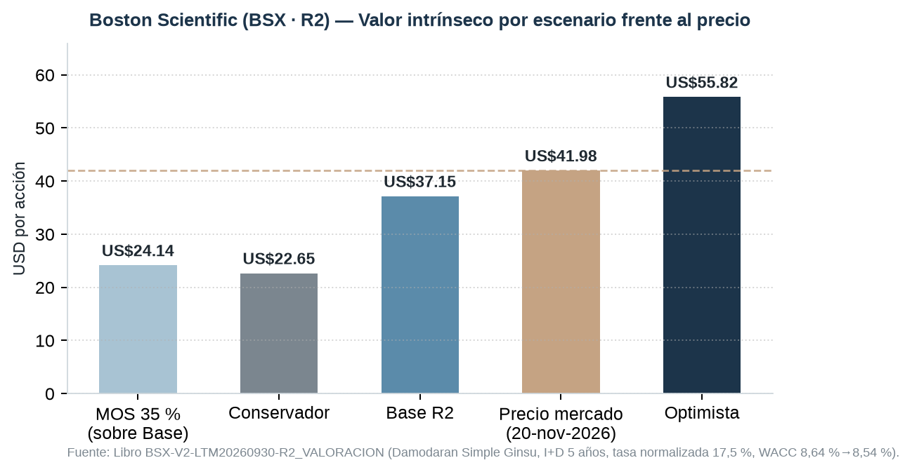
En estricto cumplimiento del contrato v1.5.6, el WACC no se digita manualmente: proviene por fórmula de la hoja Cost of capital worksheet del libro oficial. A partir de una tasa libre de riesgo de 5,15 % (convención de biblioteca; Tesoro 10A real 5,04 % en FRED el 19-nov y 4,91 % en Yahoo el 20-nov, diferencia −0,24 pp por debajo del umbral de 0,25 pp), una prima de mercado maduro de 3,387 % y los ingresos por región del 10-K FY2025 (EE. UU. 64,1 %, EMEA 17,2 %, APAC 15,3 %, LACA 3,4 %), el modelo obtiene una prima de riesgo ponderada (ERP) de 4,325 %. Con la beta desapalancada sectorial de Healthcare Products (0,857, 204 empresas EE. UU. en Damodaran) apalancada a la estructura actual de BSX, y el costo de deuda pre-impuestos de 6,037 % para calificación real A3/A− (madurez ponderada 5,4 años), el WACC inicial es 8,644 % y converge linealmente en los años 6–10 al WACC terminal de 8,537 % (Rf + ERP madura).
| Componente del puente de valoración (Escenario Base) | Importe (USD M) | USD / acción | Fuente / referencia |
|---|---|---|---|
| Valor presente de flujos explícitos (Años 1–10) | 23.095,3 | 15,93 | 36,6 % del valor operativo |
| Valor presente del valor terminal (g = 4,0 %; ROIC = 11,0 %) | 40.040,4 | 27,62 | 63,4 % del valor operativo (<75 % alerta) |
| Valor operativo de la empresa (EV DCF) | 63.135,7 | 43,56 | Valuation output!B20 (prob. quiebra 0 %) |
| (−) Deuda financiera total en balance (incl. USD 124 M arrend. fin.) | −11.953,0 | −8,25 | 10-Q 3T26 Tabla 8 y Tabla 32 (valor libros) |
| (−) Intereses minoritarios (participaciones no controladoras) | −243,0 | −0,17 | 10-Q 3T26 Balance (30-sep-2026) |
| (+) Efectivo y equivalentes | +609,0 | +0,42 | 10-Q 3T26 Balance (30-sep-2026) |
| (+) Activos no operativos (Other investments: equity method + valores) | +2.292,0 | +1,58 | 10-Q 3T26 Balance y Nota de Inversiones |
| (−) Valor de opciones de empleados (inmaterial / fuera del dinero) | 0,0 | 0,00 | Strike 2025 USD 106,06; documentado en Nota |
| Valor intrínseco del patrimonio común | 53.840,7 | 37,15 | ÷ 1.449,47 M acciones comunes al 30-sep-2026 |
Fuente: libro BSX-V2-LTM20260930-R2 (Valuation output) conciliado con motor JS (diferencia 0,000 % en los tres escenarios).
| Escenario | Valor libro (USD) | Valor motor JS (USD) | Diferencia | Brecha vs. USD 41,98 | Peso terminal | Precio MOS 35 % |
|---|---|---|---|---|---|---|
| Conservador | 22,65 | 22,65 | 0,003 % | −46,1 % | 56,1 % | N/A (solo Base) |
| Base | 37,15 | 37,15 | 0,000 % | −11,5 % | 63,4 % | USD 24,14 |
| Optimista | 55,82 | 55,82 | 0,006 % | +33,0 % | 67,4 % | N/A (solo Base) |
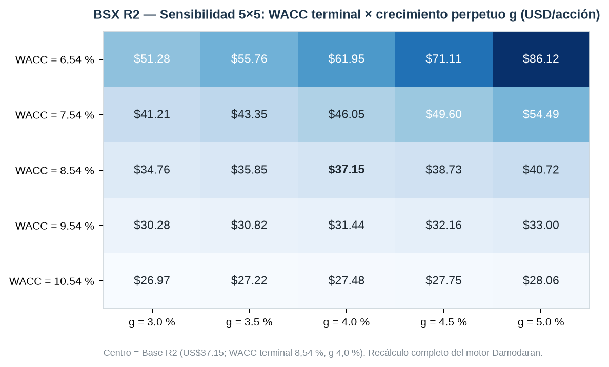
| WACC term. \ g | 3,0 % | 3,5 % | 4,0 % | 4,5 % | 5,0 % |
|---|---|---|---|---|---|
| 6,54 % | USD 51,28 | USD 55,76 | USD 61,95 | USD 71,11 | USD 86,12 |
| 7,54 % | USD 41,21 | USD 43,35 | USD 46,05 | USD 49,60 | USD 54,49 |
| 8,54 % | USD 34,76 | USD 35,85 | USD 37,15 | USD 38,73 | USD 40,72 |
| 9,54 % | USD 30,28 | USD 30,82 | USD 31,44 | USD 32,16 | USD 33,00 |
| 10,54 % | USD 26,97 | USD 27,22 | USD 27,48 | USD 27,75 | USD 28,06 |
| Margen aj. I+D \ Crec. 2–5 | 2,5 % | 4,5 % | 6,5 % | 8,5 % | 10,5 % |
|---|---|---|---|---|---|
| 19,5 % | USD 25,91 | USD 27,60 | USD 29,45 | USD 31,48 | USD 33,69 |
| 21,5 % | USD 29,04 | USD 31,07 | USD 33,30 | USD 35,74 | USD 38,40 |
| 23,5 % | USD 32,17 | USD 34,54 | USD 37,15 | USD 39,99 | USD 43,10 |
| 25,5 % | USD 35,30 | USD 38,01 | USD 40,99 | USD 44,25 | USD 47,80 |
| 27,5 % | USD 38,43 | USD 41,49 | USD 44,84 | USD 48,50 | USD 52,51 |
¿Qué descuenta el precio de USD 41,98? Manteniendo constantes el WACC (8,64 % → 8,54 %), el Sales-to-Capital (1,00×), el ROIC terminal (11,0 %) y el crecimiento terminal (4,0 %), justificar USD 41,98 requiere cualquiera de las siguientes combinaciones: (a) un crecimiento compuesto de ingresos de ~9,8 % anual en años 2–5 con margen ajustado por I+D de 23,5 % (es decir, acercarse al ritmo de la última década sin M&A adicional dilutivo), o (b) una expansión del margen operativo ajustado por I+D hasta ~26,0 % en el año 5 (+4,3 pp sobre el 21,68 % LTM ajustado) con crecimiento del 6,5 %, o (c) una caída de ~46 pb en el WACC (hacia 8,08 % terminal) junto con ejecución intacta del escenario Base.
Diagnóstico por múltiplos (externo al DCF). Al cierre del 20-nov-2026 (capitalización USD 60.849 M; EV de mercado ≈ USD 70.144 M restando caja y USD 2.292 M de inversiones no operativas), BSX cotiza a 13,1× EV/EBITDA LTM, 17,8× EV/EBIT GAAP, 17,4× P/E GAAP LTM (inflado a la baja por la tasa fiscal de 4,4 %; ~20,4× a tasa continua de 17,5 %), 13,4× P/E forward ajustado (consenso secundario USD 3,13 para 2027) y 18,3× P/FCF contable (CFO − Capex de USD 3.331 M). Frente a sus promedios de 2023–2025 (25–35× EV/EBITDA), el descuento óptico es drástico, pero el múltiplo actual refleja un costo de capital de ~8,6 % y un crecimiento 2027 estancado.
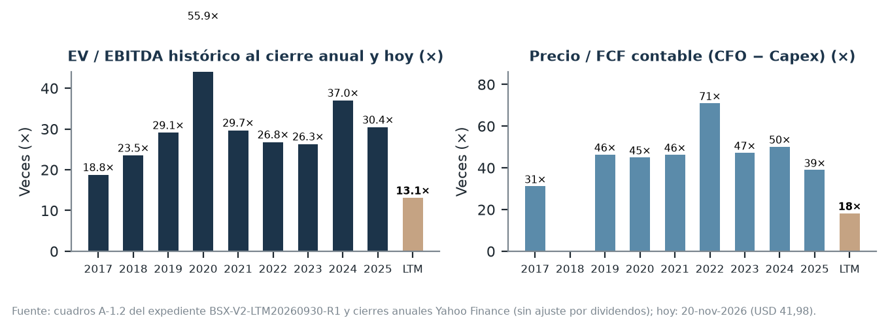
En la revisión BSX-V2-LTM20260930-R2 el libro oficial se migró a la plantilla automática diseño simple (Excel y Google Sheets nativo con los tres escenarios y dos matrices 5×5 calculados íntegramente por fórmulas) y se aplicaron cuatro correcciones metodológicas al estilo de Aswath Damodaran (guía CALIBRACION_DCF_DAMODARAN_MELI):
| Paso de calibración Damodaran (Escenario Base) | Base (USD/acc.) | Delta (USD/acc.) | Justificación económica y fuente |
|---|---|---|---|
| R1 original (tasa LTM 4,43 %, margen GAAP 18,5→21,0 %, S2C 1,10×, ROIC term. 12,5 %) | 36,27 | — | Base de partida R1 preservada en historial. |
| 1. Normalizar tasa impositiva inicial 4,43 % → 17,5 % | 33,93 | −2,34 | Elimina el subsidio fiscal artificial de 5 años derivado de créditos discretos 1S26 (10-Q 3T26 Nota G: tasa continua ~17,5 %). |
| 2. Homologar márgenes a base ajustada por I+D (21,5 % → 23,5 %) | 39,66 | +5,73 | Elimina el salto contable Año 0 (21,68 % ajustado por I+D a 5 años) → Año 1 (antes 18,5 % GAAP sin ajustar). |
| 3. Ajustar Sales-to-Capital por I+D neta (1,10× → 1,00×) | 39,04 | −0,62 | Refleja la reinversión total incluyendo inversión neta en I+D capitalizada, Capex, capital de trabajo y bolt-ons. |
| 4. Alinear ROIC terminal al Año 10 (12,5 % → 11,0 %) | 37,15 | −1,89 | Suprime el salto artificial en madurez (ROIC Año 10 = 10,87 % vs. ROIC terminal 11,0 %; reinversión terminal g/ROIC = 36,4 %). |
| Resultado oficial R2 (Conservador USD 22,65 · Base USD 37,15 · Optimista USD 55,82) | 37,15 | +0,88 | MOS 35 % sobre Base: USD 24,14 · Peso terminal: 63,4 % (< 75 %) · Paridad libro↔motor: 0,000 %. |
Boston Scientific sigue siendo una franquicia médica de alta calidad clínica, diversificada en ocho líneas de negocio y con barreras regulatorias reales. No obstante, 2026 demostró dos vulnerabilidades que el mercado ignoraba a USD 100 por acción: la velocidad con que rivales del tamaño de Medtronic y Abbott disputan el crecimiento en PFA y Watchman, y la sensibilidad de un modelo basado en adquisiciones cuando las tasas largas se estacionan en el 5 %. Al precio actual de USD 41,98, el mercado ya eliminó la prima especulativa, pero aún no entrega el margen de seguridad del 35 % (USD 24,14) que exige el Modelo JMR V2 para compensar el riesgo de ejecución del ciberataque y de la integración de Penumbra por USD 14.500 M.
| Indicador de seguimiento | Nivel actual (corte) | Umbral positivo (revisar al alza) | Umbral de alerta (invalidación) | Frecuencia |
|---|---|---|---|---|
| Crecimiento orgánico Cardiovascular / EP | +1,9 % / −5,7 % (3T26) | Retorno sostenido ≥ +7 % en 2T–4T27 | Dos trimestres negativos en 2027 | Trimestral (10-Q) |
| Ventas de Watchman (LAAO) | USD 482 M (−5,9 %, 3T26) | Crecimiento interanual ≥ +8 % | Caída >5 % por erosión de Amulet 360 | Trimestral (10-Q) |
| Margen operativo GAAP consolidado | 18,7 % LTM (16,1 % 3T26) | Recuperación ≥ 20,5 % sin ajustes | Permanencia < 16,5 % en FY2027 | Trimestral (10-Q) |
| Flujo operativo (CFO) y conversión | USD 4.234 M LTM (9M −9,5 %) | CFO ≥ USD 4.600 M y bajada inventarios | CFO < USD 3.500 M por litigios/ciber | Trimestral (10-Q) |
| Proceso FTC y cierre Penumbra | Second Request; bonos ~USD 7,6B | Cierre limpio 1S27; deuda neta <3,5× | Bloqueo FTC (penalidad USD 900 M) o >4,2× | Por evento (8-K) |
| Calidad regulatoria FDA | 3 retiros Clase I en 2026 | Resolución sin decreto de consentimiento | Warning Letter o consent decree FDA | Continua (FDA/8-K) |
| Rendimiento Tesoro 10A / Precio BSX | 4,91–5,04 % / USD 41,98 | Precio ≤ USD 28–30 o Tesoro < 4,25 % | Rebaja crediticia debajo de BBB+ | Semanal / Mensual |
Fuente: plan de seguimiento JMR V2 para BSX-V2-LTM20260930-R2.
AAA FINANZAS/MODELO JMR V2.0/ANALISIS/BSX/BSX-V2-LTM20260930-R2).companyfacts, CIK 0000885725: API SEC.DGS10 (5,04 %, 19-nov-2026), DFEDTARU/L (3,75–4,00 %), UNRATE (4,1 %), CPIAUCSL (337,48) y BAMLC0A4CBBB (1,17 %, 19-nov-2026).auto_adjust=False, sin ajuste por dividendos).fcffsimpleginzu (betas Healthcare Products, primas por región, spreads de calificación) con convención de biblioteca JMR (Rf 5,15 %, ERP madura 3,387 %). Logotipo corporativo: Wikimedia Commons (File:Boston Scientific Logo.svg).| Capítulo | Estado | Evidencia / alcance |
|---|---|---|
| 1. Perfil de la empresa y tesis | Completo | Portada NVIDIA R6 con pregunta específica en cursiva, perfil, valores Base/MOS, 4 métricas y cotización 5 años. |
| 2. Introducción | Completo | Cronología 2026 verificada con 8-K/10-Q (Penumbra, 3 recortes de guía, ASR, ciberataque, bonos nov-26). |
| 3. Modelo de negocio | Completo | Ocho unidades de negocio (9M26/3T26), geografía FY25, economía unitaria, clientes, manufactura y M&A. |
| 4. Calidad del negocio y resultados | Completo con N/D | Diez períodos (FY17–FY25 + LTM), cuadros homologados A-1.2 en unidades absolutas, trimestres, ROIC e I+D; N/D: ΔNWC. |
| 5. Equipo directivo y capital | Completo | Tabla de remuneración DEF 14A 2026, cambios CFO/COO/MedSurg, consejo, propiedad institucional y auditoría M&A/ASR. |
| 6. Competitividad | Completo con N/D | PFA (Medtronic/J&J/Abbott), LAAO (Amulet 360), MedSurg y FODA; N/D: cuotas exactas de mercado global sin fuente primaria. |
| 7. Los tres ciclos | Completo | Ciclo Damodaran, macro FRED verificada nov-2026 (Fed, 10Y, IPC, desempleo, BBB) y ciclo de mercado Howard Marks. |
| 8. Riesgos | Completo | Matriz priorizada de 6 riesgos verificados en 10-K/10-Q/8-K con mecanismos de contagio y mitigantes. |
| 9. ¿Qué podría destruir a BSX? | Completo | Tres niveles de daño, precedente Guidant, protecciones reales y 4 pruebas de estrés ilustrativas en motor V2. |
| 10. Alcistas frente a bajistas | Completo | Tabla comparativa en cuatro ejes y síntesis de asimetría riesgo/retorno. |
| 11. Supuestos y escenarios | Completo | Tabla completa, historia→número, efectos aislados 1 factor a la vez (incl. I+D), proyección 10 años, consenso y Penumbra post-corte. |
| 12. Valoración | Completo | WACC por fórmula, puente EV→patrimonio, 3 escenarios conciliados 0,000 %, 2 matrices 5×5, DCF inverso y múltiplos. |
| 13. Conclusiones y seguimiento | Completo | Veredicto sin autoaprobación y matriz de 7 indicadores con umbrales cuantitativos y frecuencia. |
| 14. Fuentes, limitaciones y glosario | Completo | Fuentes primarias SEC/FRED, secundarias rotuladas, verificación visual NVIDIA R6, limitaciones y glosario. |
Verificación visual (contrato v1.5.6). El PDF fue renderizado con WeasyPrint usando la plantilla normativa PLANTILLA_INFORME_NVDA_R6.html y cotejado página por página contra el ejemplar inmutable NVIDIA R6 (commit fa8202d7f737c75630d6bfebd2db101a067e9f2e): portada azul marino sólido #1C344A con pregunta de inversión en cursiva, apertura con aviso legal, índice y perfil integrados según secuencia NVIDIA R6, cuadros históricos A-1.2 divididos en dos bloques de 5 períodos sin recortes, 12 gráficas legibles con fuente/unidades y paridad sustantiva web↔PDF verificada.
Valoración independiente pre-Penumbra (exigirá revisión R2 al cierre); consenso de analistas y cuotas de mercado tomados de fuentes secundarias rotuladas; cambio en capital de trabajo histórico N/D por adquisiciones sucesivas; deuda tomada a valor en libros; tasa efectiva LTM distorsionada a la baja (4,4 %) por beneficios discretos en 1S26; libro oficial recalculado en Google Sheets nativo y Excel exportado (plantilla automática diseño simple) y no auditado por un tercero independiente. «N/D» indica dato no disponible o no comparable, nunca cero.
ASR: recompra acelerada de acciones. CRM: gestión del ritmo cardíaco. DOAC: anticoagulante oral directo. EBIT/EBITDA: resultado operativo / antes de depreciación y amortización. ERP: prima de riesgo de mercado. EV: valor de empresa. FCFF: flujo de caja libre de la firma. FTC: Comisión Federal de Comercio de EE. UU. LAAO: cierre de orejuela auricular izquierda. LTM: últimos doce meses. MOS: margen de seguridad (35 % solo sobre Base). NOPAT: EBIT × (1 − tasa). PFA: ablación por campo pulsado. ROIC: retorno sobre capital invertido. SBC: compensación basada en acciones. WACC: costo promedio ponderado de capital.